Research
Multidimensional & functional super-resolution microscopy
Selected work: |
C. He, C. Y. Wu, W. Li, K. Xu, "Multidimensional super-resolution microscopy unveils nanoscale surface aggregates in the aging of FUS condensates," [Link] [Cover] |
A. A. Choi, L. Xiang, W. Li, K. Xu, "Single-molecule displacement mapping indicates unhindered intracellular diffusion of small (<~1 kDa) solutes," [Link] |
H. H. Park, A. A. Choi, K. Xu, "Size-dependent suppression of molecular diffusivity in expandable hydrogels: A single-molecule study," [Link] [Xiaoliang Sunney Xie Festschrift] |
L. Xiang, R. Yan, K. Chen, W. Li, K. Xu, "Single-molecule displacement mapping unveils sign-asymmetric protein charge effects on intraorganellar diffusion," [Link] |
I. O. Aparin||, R. Yan||, R. Pelletier, A. A. Choi, D. I. Danylchuk, K. Xu, A. S. Klymchenko, "Fluorogenic dimers as bright switchable probes for enhanced super-resolution imaging of cell membranes," [Link] |
A. A. Choi, H. H. Park, K. Chen, R. Yan, W. Li, K. Xu, "Displacement statistics of unhindered single molecules show no enhanced diffusion in enzymatic reactions," [Link] |
B. Wang, M. Xiong, J. Susanto, X. Li, W.-Y. Leung, K. Xu, "Transforming rhodamine dyes for (d)STORM super-resolution microscopy via 1,3-disubstituted imidazolium substitution," [Link] |
L. Xiang||, K. Chen||, K. Xu, "Single molecules are your quanta: A bottom-up approach toward multidimensional super-resolution microscopy," [Invited Perspective] [Link] |
K. Chen, R. Yan, L. Xiang, K. Xu, "Excitation spectral microscopy for highly multiplexed fluorescence imaging and quantitative biosensing," [Link] |
R. Yan, K. Chen, K. Xu, "Probing nanoscale diffusional heterogeneities in cellular membranes through multidimensional single-molecule and super-resolution microscopy," [Link] J. Am. Chem. Soc., 142, 18866-18873, 2020. |
L. Xiang||, K. Chen||, R. Yan, W. Li, K. Xu, "Single-molecule displacement mapping unveils nanoscale heterogeneities in intracellular diffusivity," [Link] |
J. Kim, M. Wojcik, Y. Wang, S. Moon, E. A. Zin, N. Marnani, Z. L. Newman, J. G. Flannery, K. Xu, X. Zhang, "Oblique-plane single-molecule localization microscopy for tissues and small intact animals," [Link] |
D. I. Danylchuk||, S. Moon||, K. Xu, A. S. Klymchenko, "Switchable solvatochromic probes for live-cell super-resolution imaging of plasma membrane organization," [Link] |
T. Kim||, S. Moon||, K. Xu, "Information-rich localization microscopy through machine learning," [Link] |
R. Yan||, S. Moon||, S. J. Kenny||, K. Xu, "Spectrally resolved and functional super-resolution microscopy via ultrahigh-throughput single-molecule spectroscopy," [Invited review] [Link] |
L. Xiang, M. Wojcik, S. J. Kenny, R. Yan, S. Moon, W. Li, K. Xu, "Optical characterization of surface adlayers and their compositional demixing at the nanoscale," [Link] |
S. Moon||, R. Yan||, S. J. Kenny, Y. Shyu, L. Xiang, W. Li, K. Xu, "Spectrally resolved, functional super-resolution microscopy reveals nanoscale compositional heterogeneity in live-cell membranes," [Link] |
D. Kim, Z. Zhang, K. Xu, "Spectrally resolved super-resolution microscopy unveils multipath reaction pathways of single spiropyran molecules, "[Link] |
Z. Zhang, S. J. Kenny, M. Hauser, W. Li, K. Xu, "Ultrahigh-throughput single-molecule spectroscopy and spectrally resolved super-resolution microscopy," [Link] |
![[Cover]](https://pubs.acs.org/cms/10.1021/jacsat.2023.145.issue-44/asset/jacsat.2023.145.issue-44.xlargecover-5.jpg){kind=link}
Nanoscale cell biology
| 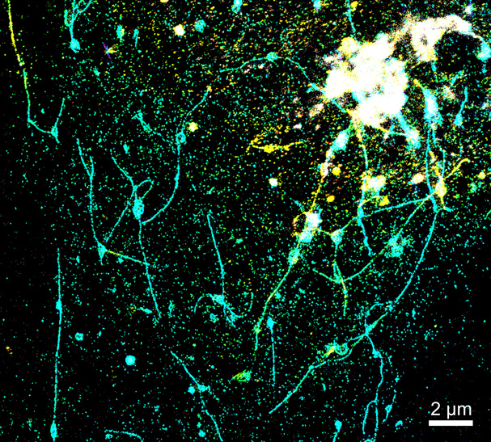 | 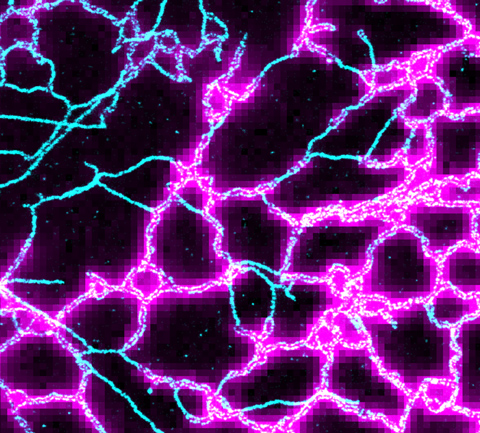 | 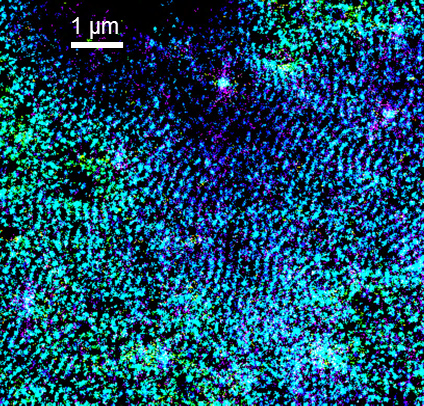 |
| 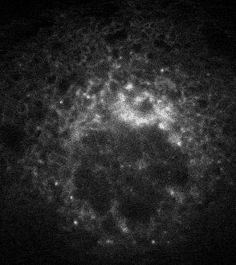 | 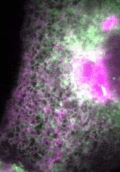 | 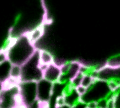 | 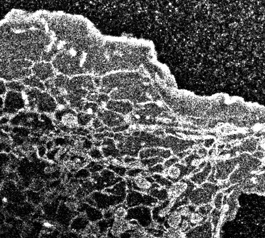 |
Selected work: |
R. Yan, K. Chen, B. Wang, K. Xu, "SURF4-induced tubular ERGIC selectively expedites ER-to-Golgi transport," [Link] |
B. Wang, Z. Zhao, M. Xiong, R. Yan, K. Xu, "The endoplasmic reticulum adopts two distinct tubule forms," [Link] |
S. J. Kenny||, X. S. Chen||, L. Ge, K. Xu, "Super-resolution microscopy unveils FIP200-scaffolded, cup-shaped organization of mammalian autophagic initiation machinery," [Link] |
L. Pan, P. Zhang, F. Hu, R. Yan, M. He, W. Li, J. Xu, K. Xu, "Hypotonic stress induces fast, reversible degradation of the vimentin cytoskeleton via intracellular calcium release," [Link] |
L. Yuan, S. J. Kenny, J. Hemmati, K. Xu, R. Schekman, "TANGO1 and SEC12 are copackaged with procollagen I to facilitate the generation of large COPII carriers," [Link] |
M. Hauser, R. Yan, W. Li, N. A. Repina, D. V. Schaffer, K. Xu, "The spectrin-actin-based periodic cytoskeleton as a conserved nanoscale scaffold and ruler of the neural stem cell lineage," [Link] |
L. Pan, R. Yan, W. Li, K. Xu, "Super-resolution microscopy reveals the native ultrastructure of the erythrocyte cytoskeleton," [Link] |
S. Köhler||, M. Wojcik||, K. Xu, A. F. Dernburg, "Superresolution microscopy reveals the three-dimensional organization of meiotic chromosome axes in intact Caenorhabditis elegans tissue, "[Link] |
A. Gorur, L. Yuan, S. J. Kenny, S. Baba, K. Xu, R. Schekman, "COPII-coated membranes function as transport carriers of intracellular procollagen-I," [Link] |
L. Ge, M. Zhang, S. J. Kenny, D. Liu, M. Maeda, K. Saito, A. Mathur, K. Xu, R. Schekman, "Remodeling of ER-exit sites initiates a membrane supply pathway for autophagosome biogenesis, "[Link] |
Graphene microscopy and chemistry
| 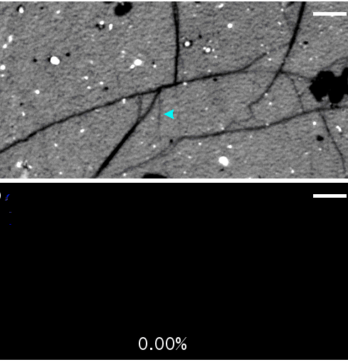 | 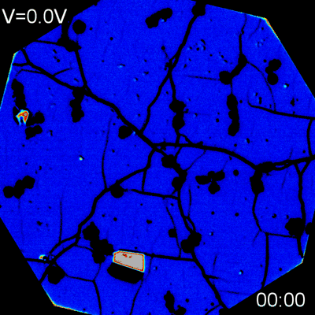 | 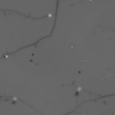 | 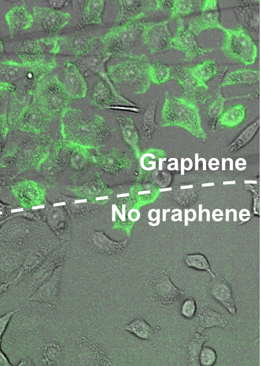 |
W. Li||, Y. Li||, B. Wang, K. Xu, "Visible-light azidation and chemical patterning of graphene via photoredox catalysis," [Link] |
Y. Li, B. Wang, W. Li, K. Xu, "Dynamic, spontaneous blistering of substrate-supported graphene in acidic solutions," [Link] [Cover] |
W. Li, Y. Li, K. Xu, "Facile, electrochemical chlorination of graphene from an aqueous NaCl solution," [Link] |
S. Moon||, W. Li||, M. Hauser, K. Xu, "Graphene-enabled, spatially controlled electroporation of adherent cells for live-cell super-resolution microscopy," [Link] |
W. Li, Y. Li, K. Xu, "Azidated graphene: direct azidation from monolayers, click chemistry, and bulk production from graphite," [Link] |
Y. Li, W. Li, M. Wojcik, B. Wang, L.-C. Lin, M. B. Raschke, K. Xu, "Light-assisted diazonium functionalization of graphene and spatial heterogeneities in reactivity," [Link] |
W. Li, M. Wojcik, K. Xu, "Optical microscopy unveils rapid, reversible electrochemical oxidation and reduction of graphene," [Link] |
D. Joshi||, M. Hauser||, G. Veber, A. Berl, K. Xu, F. R. Fischer, "Super-resolution imaging of clickable graphene nanoribbons decorated with fluorescent dyes," [Link] |
M. Wojcik||, Y. Li||, W. Li, K. Xu, "Spatially resolved in situ reaction dynamics of graphene via optical microscopy,"[Link] |
W. Li||, S. Moon||, M. Wojcik||, K. Xu, "Direct optical visualization of graphene and its nanoscale defects on transparent substrates,"[Link] |
M. Wojcik||, M. Hauser||, W. Li, S. Moon, K. Xu, "Graphene-enabled electron microscopy and correlated super-resolution microscopy of wet cells," [Link] |
![[Cover]](https://pubs.acs.org/pb-assets/images/_journalCovers/ancac3/ancac3_v016i004-4.jpg){kind=link}